SF Bay Area · Designing since 2008
Multidisciplinary designer with a hackathon mentality and a solid foundation of professional design experience.
Times Square billboards · 1,000 sq ft
NHL stadium graphics · broadcast
Enterprise UX systems · 1,440 px
AI-native product design · tokens
Selected Work
09 projects · 2008 to present01 Apple · AI-Orchestrated Design Web · Presentation · Instructional · AI 2025-2026
At Apple I work across web, presentation, and instructional design, with AI as the primary execution layer. A web design foundation going back to 2008 keeps the output honest: no AI slop, no hallucinations, no vanity metrics. Claude, OpenAI, and Gemini handle the intense development while I focus on functionality, correctness, and quality.
As the team's go-to for UX and AI, I keep a human designer in control at every step: frame the audience, direct the model, review by hand, ship the asset plus the reusable system behind it. Deliverables below are generalized to protect confidential detail.
- Role
- Designer / AI orchestrator
- Disciplines
- Instructional · presentation · web · AI orchestration
- Tools
- Claude Code · Claude · OpenAI · Gemini
- Process
- Frame → Direct → Review → Ship
- Detail
- Generalized; specifics available on request
Representative deliverables
- Single-file interactive HTML courses with custom icon systems, authored from raw source material into structured curriculum
- Standards-conformant e-learning packages (completion, scoring, bookmarking) plus print handouts from the same source
- Programmatic branded decks and reusable template/component libraries that keep quality independent of any one person
- Internal browser tools with per-user authentication, so credentials and data stay with the individual
- Methods, prompts, and workflows using Claude Code, Claude, OpenAI, and Gemini, shared openly so AI fluency spreads across the team instead of living in one person
02 PayPal · Developer Platform Engineering Content Design · Web · Brand 2025-2026
Content Designer III on PayPal's Developer Platform Engineering team, bridging design and development for the developer ecosystem.
The core build: internal SharePoint site design using custom, non-standard widgets that make a SharePoint page look and feel like a modern responsive website. Around it: executive presentations, All Hands event branding, and design system upkeep under Pentagram's brand refresh.
- Role
- Content Designer III
- Period
- Aug 2025 to Jan 2026
- Stack
- SharePoint · custom widgets · HTML, CSS, JS
- Brand
- Pentagram brand refresh implementation
03 PraxisLearning Website UI · Web 2025
Designed the UI for the PraxisLearning website: a learning-journeys platform that turns training events into daily practice. The design carries my decade-plus of LMS and e-learning domain knowledge into the brand, narrative, and layout decisions, from the homepage story through the demo funnel.
- Role
- UI / web designer
- Scope
- Site design, visual system, responsive layouts
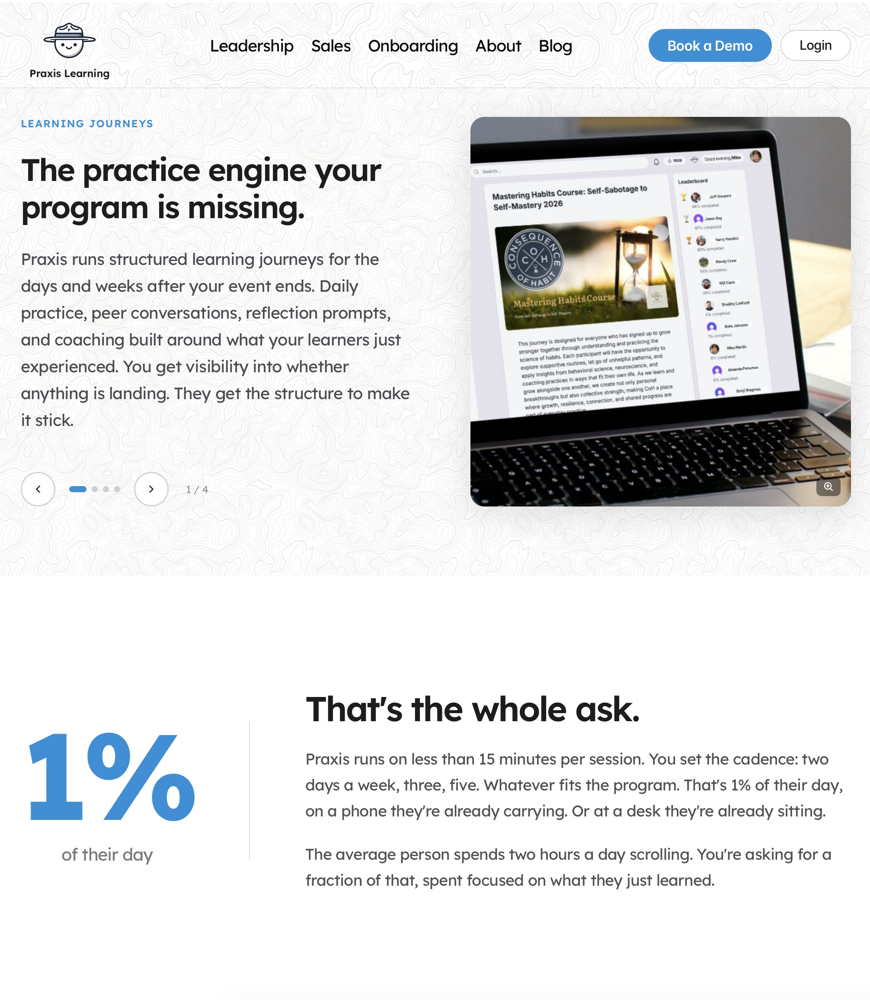
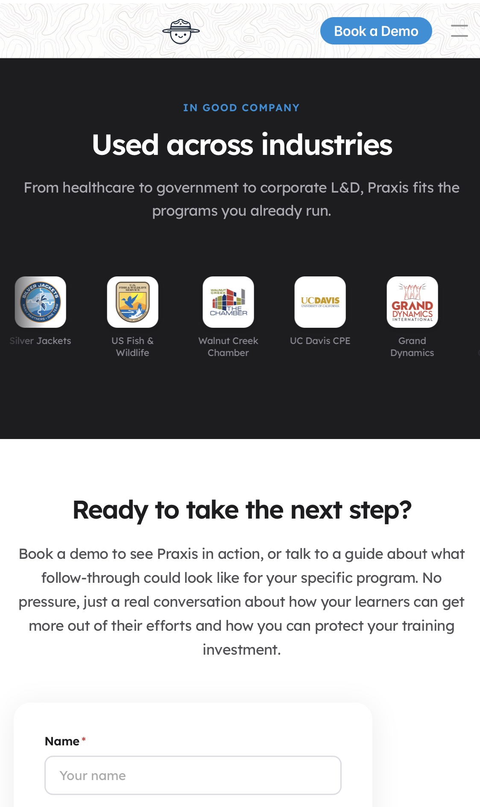
04 Litmos · UX & UI Design UX Case Studies · Product 2016-2024
Seven years of product design across the Litmos LMS on web, iOS, and Android. Two flagship case studies below, plus the course tile system that themed the entire training catalog.
The navigation problem. Admins needed special training just to find features; key functions were buried 3 to 9 clicks deep, split across separate Admin and Learner views. I led the redesign of a unified meganav, grounded in persona interviews, card sorting, and usage analytics. Nearly every area of the platform landed one click away, for every role, with no view switching.
The Live Training Calendar. The old calendar was view-only: no filters, no discovery, no registration. I led the rebuild end to end, including sourcing the base tool (MobiScroll), and shipped a calendar that met the LennyKit design system, worked in React and Bootstrap 5, and did what learners expected: find a session, see the details, register, done.
Course tile design. A branded tile system for the Litmos product training journey: one visual language across the whole catalog, built so learners could identify course areas and themes at a glance.
- Role
- Lead UX designer
- Research
- Persona interviews · card sorting · usage analytics
- Constraints
- LennyKit design system · React + Bootstrap 5 · WCAG
- Platforms
- Web · iOS · Android
Outcomes
- Average clicks to key features: 5 down to 1 or 2, with roughly 60% navigation time savings in testing
- Unified Admin and Learner views, no more profile switching
- 1 to 2 click session registration, plus the filters and search every interviewed user asked for
- Month, week, day, multi-day, and list calendar views, fully responsive
- Accessibility-vendor verified across the board
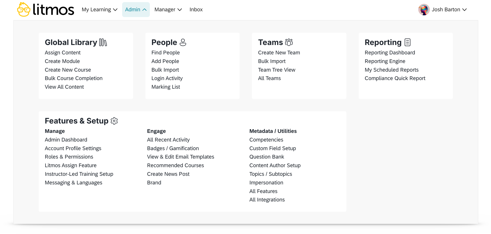
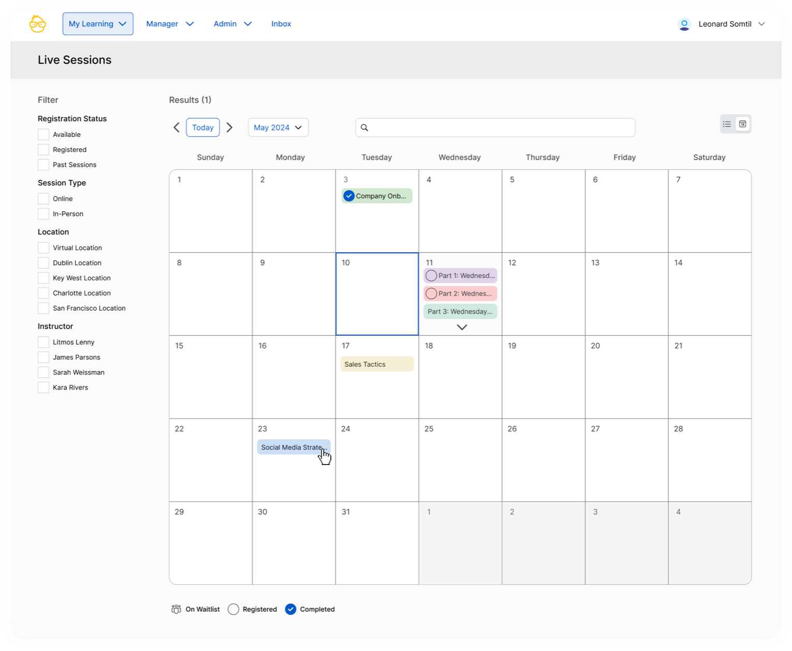
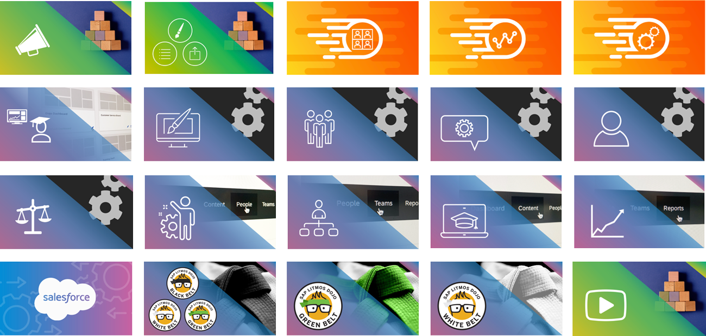
05 Litmos · L&D Training & Course Design Instructional · Motion · Video 2016-2024
Before my product design role at Litmos, I partnered with the Chief Learning Officer to write, design, and produce the full Litmos Dojo curriculum: the black-belt program that turned customers into platform senseis. Day to day spanned course writing, SCORM authoring, visual design, and video editing.
The animation work was handcrafted from concept to final production in After Effects and Premiere. We also shot live skits in a professional studio with cinematic camera and lighting rigs to make product release training fun to watch.
- Role
- Instructional designer · content creator
- Tools
- After Effects · Premiere · Camtasia · studio production
- Extras
- Dojo badge system · SCORM authoring · audio licensing
06 Google · Aha! Research Hub (20% Project) UX · Internal Tools 2014 / 2018
While on a visual design contract at Google, I noticed researchers fighting a dense spreadsheet to find insights. So I concepted and shipped a 20% project: the Aha! Global Insights & Research Hub, integrating multiple internal tools into one searchable interface.
Search results rendered as scannable "3×5 notecards", up to 15 at a glance, with filtering and sorting that cut the time to find relevant data significantly. Google brought me back in 2018 to design the global awareness campaign: posters, templates, and team swag distributed across offices worldwide.
- Role
- Concept, UX, and UI, self-initiated
- Longevity
- Live internally at go/AHA from 2014 for roughly a decade
- Encore
- 2018 global awareness campaign design
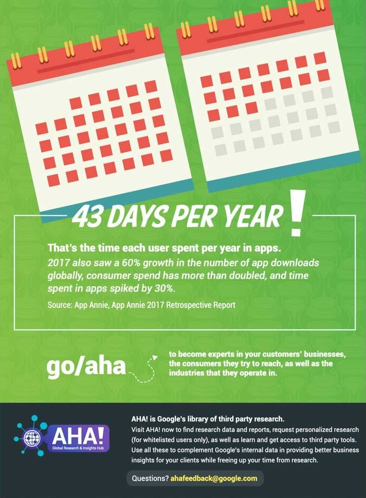
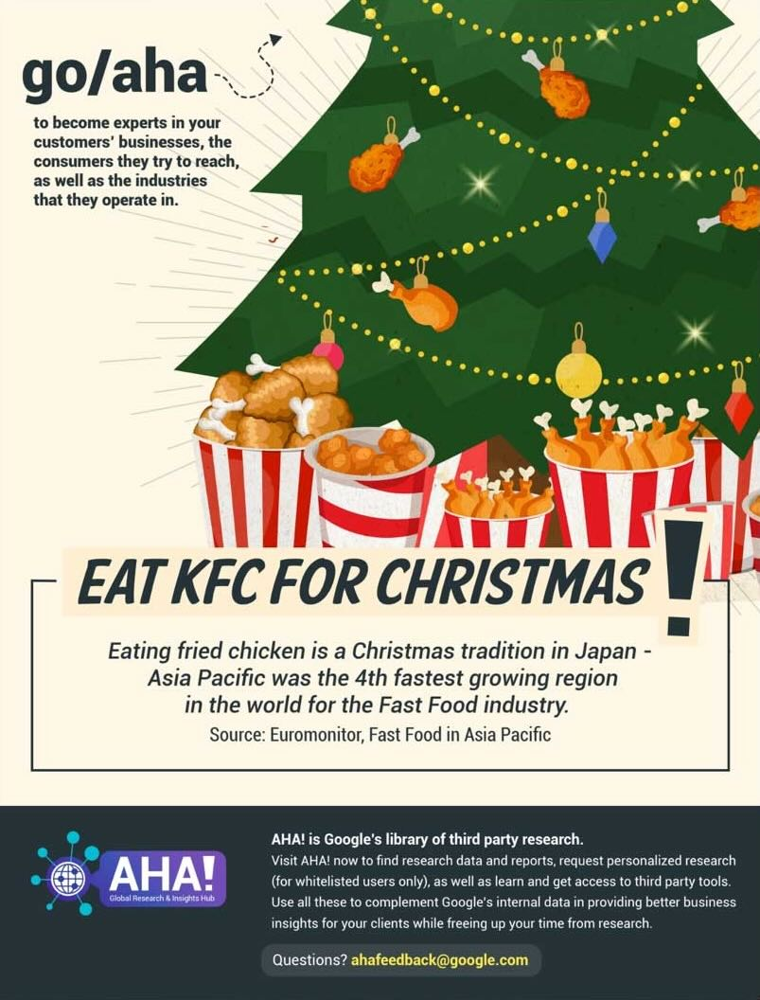
07 CoolSculpting · Times Square Launch Campaign Brand · Advertising 2015-2016
Designed the NYC Times Square billboard campaign for the launch of CoolSculpting.com: a multi-channel push spanning outdoor, social, and national print placements in People, Allure, and MORE magazines.
- Role
- Campaign designer
- Channels
- Times Square billboards · NYC transit · national print · social
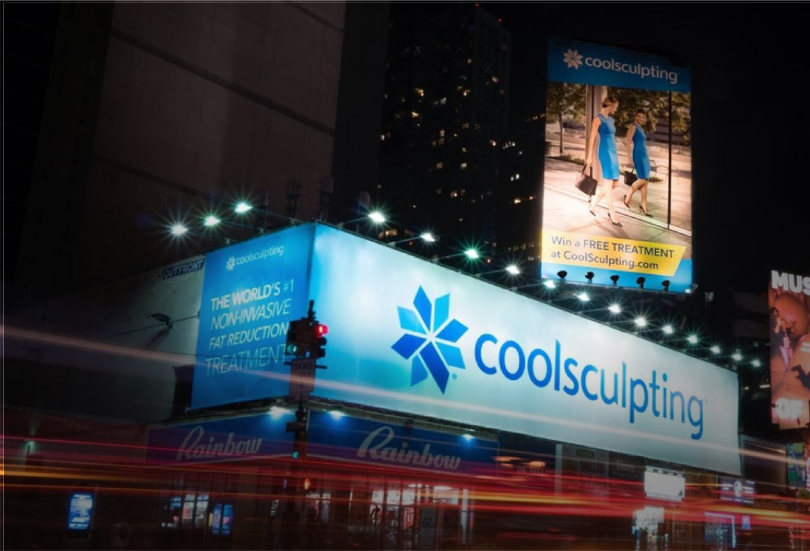
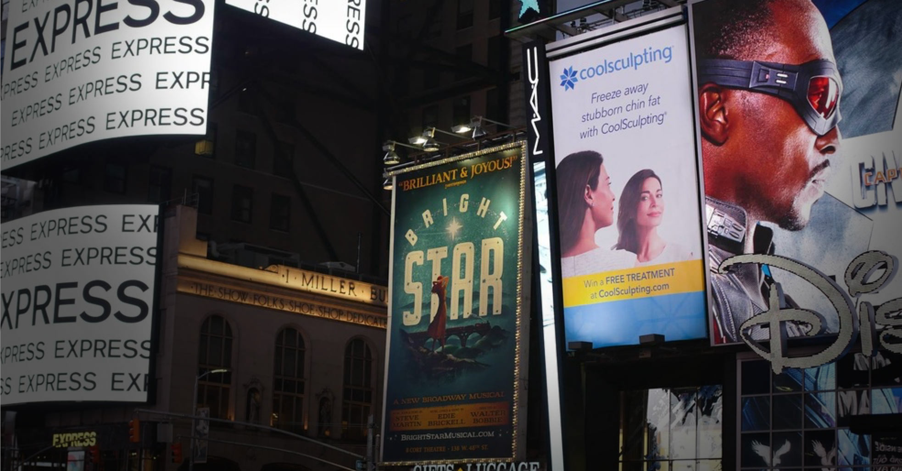
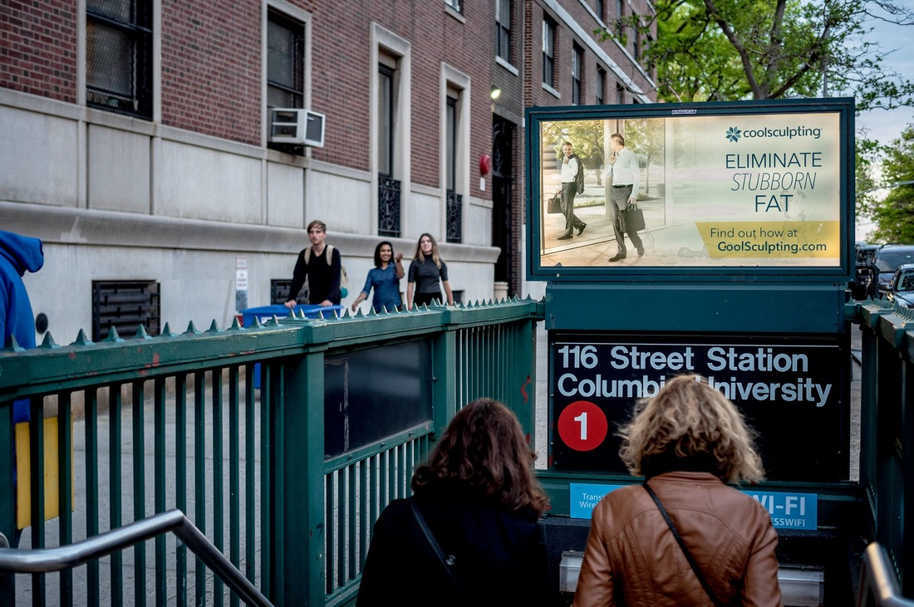
08 NHL Winter Classic & Stadium Series Environmental · Broadcast 2014
Stadium-sized environmental graphics for live, nationally televised NHL events: design that has to read from the nosebleeds, on camera, and in person simultaneously.
For the 2014 Winter Classic at Michigan Stadium, I had hands on virtually every stadium visual in the venue, from mega-banners down to rink-side signage, plus dasher boards and environmental graphics for the Stadium Series at Soldier Field.
- Role
- Environmental graphics designer
- Events
- 2014 Winter Classic · 2014 Stadium Series
- Scale
- Stadium-scale, broadcast-visible, live TV
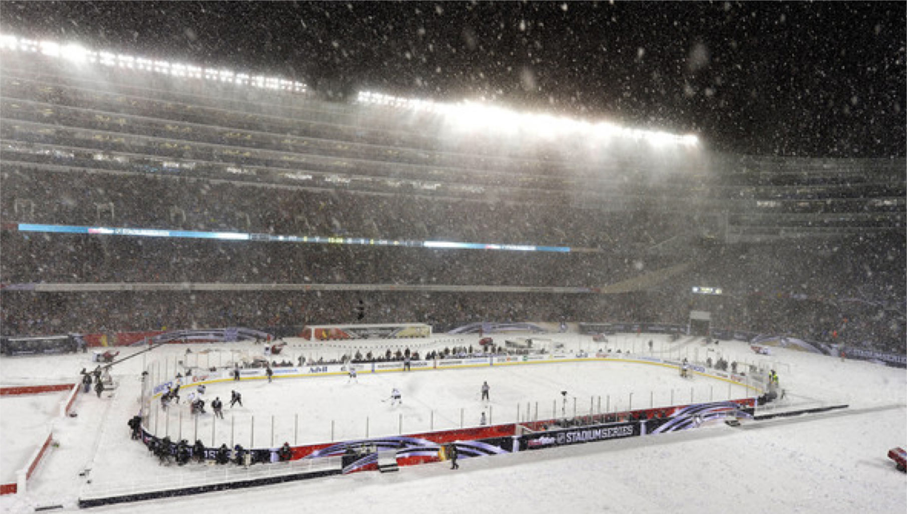
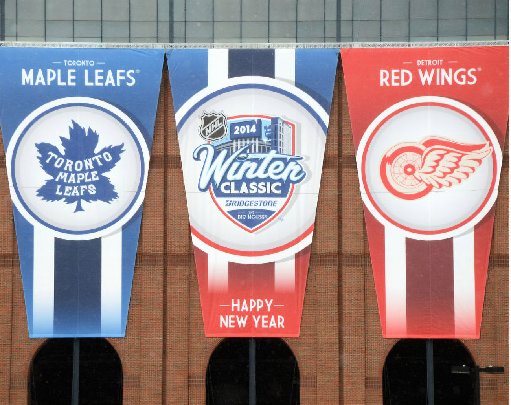

09 AI-Embedded Event Learning Platform Stealth Product Design · AI 2025-2026
End-to-end design of an AI-embedded application for the learning and large-event industry. I own the product design from concept through UI, with AI woven into the core workflows rather than bolted on.
Claude powers the system's extremely complex backend, while the front end delivers AI-driven training and live updates. Users lean on AI to create content rapidly and let it do the heavy lifting across the app.
The product is in stealth and I'm under NDA, so that's all I can share for now.
- Role
- Founding product designer, end-to-end
- Scope
- Product strategy · UX · UI · AI interaction design
- AI
- Claude-powered backend · AI content creation · live updates
- Status
- In stealth, under NDA
The Lab
After-hours buildsL1 Level 99 Bard One HTML file Synth · WebGL · Personal Build Ongoing
A polyphonic synthesizer and DAW fused with a WebGL space-flight game, all inside one self-contained HTML file. The media panel embeds the current full vox130 build directly, so the real faceplate, synth controls, and visualizer are available in place.
Fly over a procedurally generated San Francisco and Monterey Bay world built from real bathymetric survey data, under a working solar and lunar system with live weather, while a Game Boy-skinned synth engine scores the flight.
This is what I do for fun in my spare time: experiment with the tools that are out there, test what they can actually do, and see what I can build.
Work in progress: this is an active personal build. Parts of the synth, visualizer, and flight systems may shift as I keep testing and refining the project.
- Stack
- Three.js · Web Audio · vanilla JS · zero build step
- Form
- Current full vox130 HTML build preloaded in the background and embedded in the portfolio
- UI
- Single bounded playable media panel; diagnostics hidden unless enabled from the menu
- World
- Real SF Bay bathymetric data, georeferenced
- Status
- In active development
Capabilities
What I doUX & Product Design
Research-driven design for complex enterprise systems. Personas, card sorts, usage data, design systems, accessibility, then shipped UI in React. Formal UX training via General Assembly, sharpened over 7 years inside an LMS used by millions.
Brand, Print & Motion
Career visual designer and animator. Times Square billboards, national magazine ads, NHL stadium graphics, TV spots, and handcrafted motion work from concept through final production.
AI-Native Building
Hackathon mentality, production discipline. I direct AI tooling, Claude Code and agentic workflows, to design, code, and ship simultaneously. HTML/CSS/JS fluency means my designs arrive working, not as handoff files.
References
Sourced from LinkedInJosh is a 10/10 on every scale. Finding a true self-starter these days is difficult; he solves any challenge put in front of him, and if he has to learn a new skill completely on his own, he does it joyfully.Ryan Morris · Senior Customer Training Architect
On several occasions, he presented ideas that not only improved the flow of the platform, but dramatically changed the look and feel in a beautiful and engaging way.Terry Lydon · CEO & former CTO, Litmos
His innovative and intuitive improvements to our dated UI allowed customers to rapidly adopt and enjoy our platform. His versatility and impact make him a valuable asset to any organization.Adrien Samonek · Product Lead, LCvista
Josh is a designer who is empathetic to customer needs and creates engaging, user-friendly designs that are simple to use. A great team player and a joy to work with.Ramyaa Narayanan · Sr. Product Manager
His designs are top-notch, and he gets what users need. Josh's work always stands out; he brings a lot of creativity and insight to every project.Raman Khenanisho · Sr. Solutions Architect, Litmos
Right off the bat you can tell when someone has a spark of creativity, and Josh has it. He has a great eye for design and real knowledge in the production of good content.Chase Mallow · Video Communications Specialist
Josh is extremely creative and was my go-to designer to think outside the box and create engaging, exciting content.Emily Seo · Consumer Marketing Manager, ZELTIQ
Look no further, stop your search. I rarely meet someone as capable, efficient, and eager to please. He took our very specific ideas and brought them to life.Kellie Owen · Owner, Integral Landscapes LLC
By the time 90% of them responded, I was already hiring Josh for the second time. His work is clean, and he's beaten every deadline I've set for him.David Martin Owen · Owner, Right Noise Productions
All nine sourced from LinkedIn